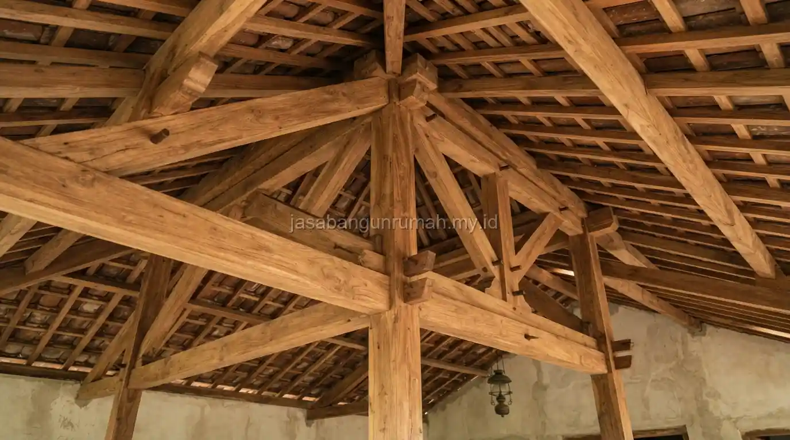

Daftar Isi
Baja ringan lebih unggul dalam daya tahan terhadap rayap dan bobot yang lebih ringan, sedangkan kayu memiliki keunggulan pada kemudahan modifikasi bentuk atap tertentu dan ketersediaan tukang yang lebih familiar di sebagian daerah.
Apa Perbedaan Baja Ringan dan Kayu sebagai Rangka Atap?
Baja ringan adalah material rangka atap berbahan baja berlapis zinc atau aluminium dengan bentuk profil C atau Z yang dirakit menggunakan sekrup khusus, sedangkan kayu adalah material tradisional yang telah lama digunakan sebagai rangka atap dengan sistem sambungan pasak atau paku.
Dari sisi bobot, baja ringan jauh lebih ringan dibandingkan kayu untuk kekuatan yang setara, sehingga beban yang ditanggung struktur di bawahnya menjadi lebih kecil.
Kayu di sisi lain memiliki karakter alami yang lebih mudah dipotong dan dibentuk sesuai kebutuhan desain atap yang rumit, meski proses ini membutuhkan keahlian tukang kayu yang berpengalaman.
Tabel Perbandingan Baja Ringan dan Kayu untuk Rangka Atap
| Bahan | Spesifikasi Teknis | Kelebihan | Estimasi Harga per Satuan | Rekomendasi Kegunaan |
|---|---|---|---|---|
| Baja Ringan | Profil C atau Z berlapis zinc/aluminium, bobot ringan, dirakit dengan sekrup khusus | Tahan rayap, tidak mudah lapuk, bobot ringan mengurangi beban struktur | Berkisar Rp 150.000 - Rp 250.000 per meter lari, dapat bervariasi tergantung merek dan wilayah | Cocok untuk atap dengan bentuk standar dan proyek yang mengutamakan kecepatan pemasangan |
| Kayu | Kayu olahan seperti kayu kelas II atau III, bentuk balok atau papan, disambung dengan pasak atau paku | Mudah dibentuk untuk desain atap rumit, familiar bagi tukang tradisional di banyak daerah | Berkisar Rp 100.000 - Rp 200.000 per meter lari, dapat bervariasi tergantung jenis dan kualitas kayu | Cocok untuk atap dengan bentuk khusus atau area yang mengutamakan kesan tradisional |
Mana yang Lebih Tahan Lama dan Minim Perawatan?
Baja ringan umumnya lebih tahan lama karena tidak rentan terhadap serangan rayap dan pelapukan akibat kelembapan, sehingga kebutuhan perawatan rutin jauh lebih minim dibandingkan kayu yang perlu perlakuan anti rayap secara berkala.

Kayu di sisi lain berisiko mengalami pelapukan atau serangan rayap jika tidak dirawat dengan baik, terutama pada daerah dengan kelembapan tinggi, sehingga membutuhkan perlakuan tambahan seperti pengawetan kayu sebelum dipasang serta pemeriksaan berkala setelah bertahun-tahun terpasang.
Meski demikian, baja ringan tetap perlu diperhatikan kualitas lapisan anti karatnya, karena baja ringan dengan lapisan zinc rendah berpotensi mengalami korosi lebih cepat terutama di daerah dekat pantai dengan kadar garam udara tinggi. Faktor yang mempengaruhi daya tahan kedua material:
- Baja ringan: kualitas lapisan zinc, ketebalan profil, dan kondisi lingkungan sekitar
- Kayu: jenis dan kelas kayu, perlakuan pengawetan, serta tingkat kelembapan daerah
Mana yang Lebih Hemat dari Sisi Biaya dan Kemudahan Pemasangan?
Dari sisi kecepatan pemasangan, baja ringan cenderung lebih cepat karena sistemnya yang presisi dan sudah terstandarisasi pabrik, sedangkan kayu membutuhkan waktu lebih lama karena proses pemotongan dan penyesuaian ukuran dilakukan secara manual di lokasi proyek.
Dari sisi biaya satuan, harga keduanya dapat bervariasi tergantung wilayah dan ketersediaan material, sehingga perbandingan biaya total sebaiknya turut memperhitungkan upah tukang dan lama waktu pengerjaan, bukan hanya harga material per satuan panjang.
Untuk mendapatkan estimasi biaya yang lebih sesuai kebutuhan atap rumah Anda, dapat berkonsultasi langsung dengan tim kontraktor bangunan kami melalui simulasi perhitungan berdasarkan luas dan bentuk atap yang direncanakan.